ZCO Document Management
- Para
- Zachodniopomorskie Centrum Onkologii w Szczecinie
- Elaborado por
- Polmedi Group sp. z o.o., Poznań
- Versión de la aplicación
- 1.6.7
- Fecha de edición
- 26 de agosto de 2026
Índice
- Qué es ZCO Document Management
- Inicio de sesión y disposición de la pantalla
- Panel de control
- Tu cuenta y el manual
- Consultar los documentos
- Añadir documentos
- Poner orden: carpetas, mover, eliminar
- Permisos y roles
- Chat con IA: preguntas sobre el contenido de los documentos
- Búsqueda por campos descriptivos
- Administración
- Cómo reconoce la aplicación los documentos
- Solicitud al soporte técnico
- Buenas prácticas
- Limitaciones y planes de desarrollo
- Preguntas frecuentes
- Glosario
Qué es ZCO Document Management
ZCO Document Management (en resumen ZCO DM) es una base interna de documentos. La aplicación hace dos cosas a la vez: guarda los documentos en una estructura ordenada de carpetas y permite preguntar por su contenido en lenguaje corriente, igual que le preguntaríamos a un compañero que conoce esos documentos.
La diferencia frente a un disco de red corriente es fundamental. En un disco hay que saber en qué archivo buscar. Aquí basta con preguntar «¿cuáles son las normas del trabajo a distancia?» y la aplicación encuentra sola los pasajes pertinentes, compone con ellos una respuesta y muestra de qué documento procede cada frase.
Dos caminos hasta un documento
La aplicación responde a dos tipos distintos de pregunta y tiene para ellos dos pantallas separadas. El Chat con IA responde a preguntas sobre el contenido: «¿a partir de qué edad del niño corresponde la ayuda?». La Búsqueda responde a preguntas sobre la estructura: «muestra todos los reglamentos de 2023». La separación es deliberada: gracias a ella no hay que adivinar en qué campo escribir la pregunta.
Qué ocurre con un documento después de subirlo
Cada documento pasa por un procesamiento automático. La aplicación lee su contenido (también el de las tablas), lo divide en fragmentos, reconoce el tipo de documento —reglamento, procedimiento, solicitud— y extrae de él campos descriptivos, por ejemplo un número, una fecha o la persona que lo aprueba. Solo después el documento se hace visible para la búsqueda y para el chat.
Procesar un documento suele durar de unas decenas de segundos a unos minutos, según su extensión y según si es un archivo de texto o un escaneo que requiere reconocimiento de caracteres. Durante ese tiempo el documento tiene el estado En cola o Procesando.
Seguridad de los datos
Toda la aplicación, junto con el modelo de lenguaje, funciona en un servidor que pertenece a Zachodniopomorskie Centrum Onkologii. Ni el contenido de los documentos ni las preguntas formuladas salen de ese servidor y no se envían a ningún servicio externo. El acceso a los documentos se deriva de los permisos concedidos al rol al que pertenece la cuenta: el usuario ve únicamente las carpetas que se le han compartido.
Inicio de sesión y disposición de la pantalla
La aplicación se abre en un navegador web en la dirección indicada por el administrador. Sobre el formulario aparece la marca de la instancia: un icono y un nombre. Iniciamos sesión con la dirección de correo electrónico y la contraseña recibida del administrador; las mayúsculas y minúsculas de la dirección no importan.
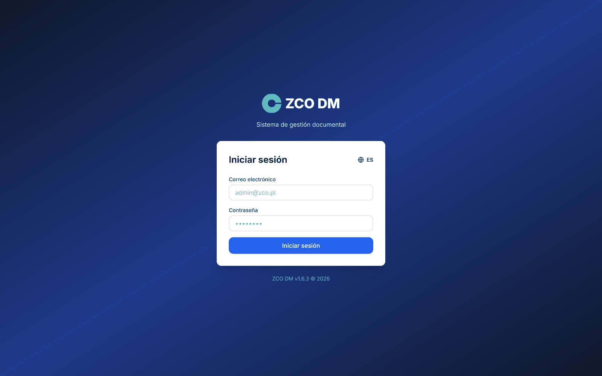
Tras iniciar sesión la pantalla se divide en dos partes. A la izquierda está el menú azul marino, a la derecha el contenido de la página elegida. En la esquina superior derecha se ven el nombre y el apellido, además de un círculo con las iniciales que despliega el menú de usuario. Al pie del menú lateral figura el número de versión de la aplicación —que es un enlace al historial de cambios— junto con la información sobre el fabricante.
Plegar el menú
Al hacer clic en la marca de la instancia en lo alto del menú, este se pliega hasta quedar en iconos, dejando más sitio para el contenido. Un nuevo clic lo despliega de nuevo. La elección se recuerda entre sesiones, de modo que un menú plegado una vez seguirá plegado también tras el siguiente inicio de sesión.
El menú bajo las iniciales
- Perfil: los datos propios de la cuenta y el cambio de contraseña.
- Manual de usuario: este documento, abierto directamente en la aplicación; también se puede descargar como PDF.
- Cerrar sesión: fin del trabajo.
Entradas del menú lateral
- Panel de control: la pantalla de inicio con un resumen numérico y gráficos de actividad.
- Archivos: el explorador de carpetas y documentos.
- Chat con IA: preguntas sobre el contenido de los documentos.
- Búsqueda: el buscador por campos descriptivos.
Más abajo hay una línea con el rótulo ADMINISTRACIÓN y bajo ella una parte visible únicamente para el administrador: Usuarios, Lista de accesos, Esquemas de documentos, Cola de archivos, Registro de respuestas y Ajustes. Las mismas entradas aparecen además como barra de pestañas en la parte superior de cada pantalla administrativa.
Al pie del menú hay todavía un recuadro, ¿Necesita ayuda?, con el botón Contactar: lleva al formulario de solicitud al soporte técnico (véase el capítulo aparte). Cuando el menú no cabe en una pantalla baja, se desplaza solo la lista de entradas; el recuadro de ayuda y el pie permanecen en su sitio.
Panel de control
El Panel de control es la pantalla de inicio. Muestra el estado de la base de documentos en cifras y gráficos, y todo lo que hay en ella se refiere al intervalo de tiempo elegido: la lista desplegable de la esquina superior derecha, con las opciones de 7, 30 y 90 días. Una sola elección rige toda la pantalla, de modo que los recuadros y los gráficos hablan siempre del mismo periodo.
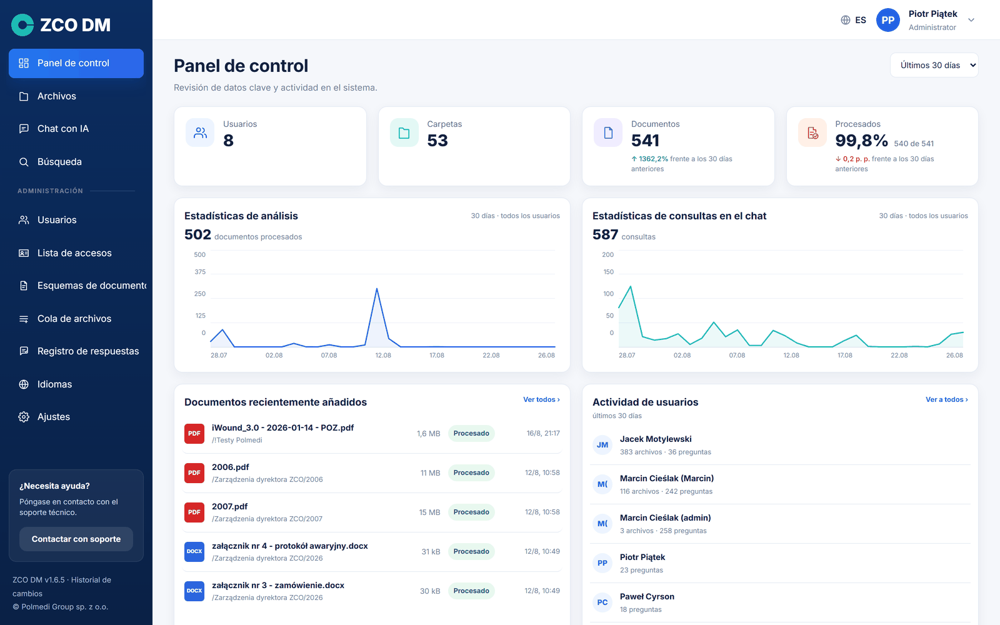
Los recuadros de arriba
Cuatro recuadros indican el número de cuentas, carpetas y documentos, así como la proporción de documentos ya procesados. Bajo la cifra suele haber una segunda línea con la comparación respecto al periodo anterior, por ejemplo ↑ 12,6 % frente a los 30 días anteriores.
Gráficos
Dos gráficos muestran la actividad diaria: el número de documentos procesados y el número de preguntas planteadas al chat. Al pasar el cursor se ve el valor exacto de un día dado.
Documentos añadidos recientemente y actividad de los usuarios
Los dos paneles bajo los gráficos muestran los cinco documentos subidos más recientemente y un resumen de la actividad de las cuentas en el periodo elegido: cuántos archivos subió alguien y cuántas preguntas planteó. Las cuentas sin actividad alguna no ensucian la lista; su número se indica debajo.
Acciones rápidas, espacio y estado del servidor
La fila inferior son tres paneles. Las Acciones rápidas llevan directamente a las tareas más frecuentes. Espacio en el sistema muestra la ocupación del disco del servidor; atención: del disco entero, compartido con los demás servicios, por lo que debajo se indica aparte el tamaño de los documentos por sí solos. Estado del sistema dice si funcionan la aplicación, la base de datos, el analizador de documentos y el almacén de archivos.
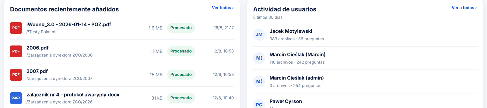
Tu cuenta y el manual
El círculo con las iniciales de la esquina superior derecha despliega un menú con tres entradas: Perfil, Manual de usuario y Cerrar sesión. El menú se cierra con la tecla Escape o con un clic al lado.
La página Perfil
La página Perfil muestra los datos de la cuenta: nombre de visualización, nombre y apellido, dirección de correo electrónico, rol asignado, estado de la cuenta y fecha del último inicio de sesión.
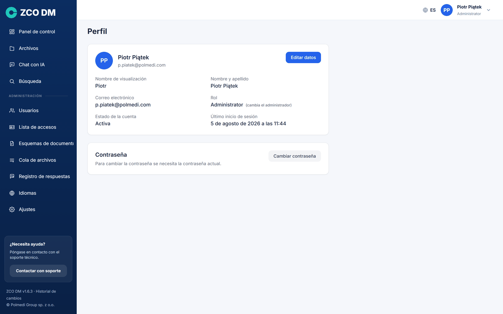
El botón Editar datos convierte las tres primeras entradas en campos de formulario. Guardamos con Guardar y damos marcha atrás con Cancelar.
- Nombre de visualización: aparece en el saludo, en las iniciales y en los resúmenes del administrador. No sirve para iniciar sesión, así que puedes cambiarlo libremente.
- Nombre y apellido: la forma completa, usada en la página Perfil y en el menú.
- Dirección de correo electrónico: con esta dirección iniciamos sesión en la aplicación. Tras cambiarla, el siguiente inicio de sesión se hace ya con la nueva dirección.
Cambio de contraseña
La contraseña se cambia en una tarjeta aparte, Contraseña, con el botón Cambiar contraseña. El formulario pide la contraseña en uso y la nueva escrita dos veces. La nueva contraseña debe tener al menos ocho caracteres y ser distinta de la anterior.
Tras un cambio correcto la aplicación cierra la sesión y muestra la pantalla de inicio de sesión: es deliberado, así comprobamos enseguida que la nueva contraseña funciona.
Ayuda
La entrada Manual de usuario abre la página Ayuda con este documento directamente en la aplicación, sin buscar un archivo en el disco. En lo alto de la página hay dos botones: Abrir en nueva pestaña y Descargar PDF. El administrador ve la edición completa; las demás cuentas, la edición para usuarios, que describe únicamente las pantallas a las que tienen acceso.
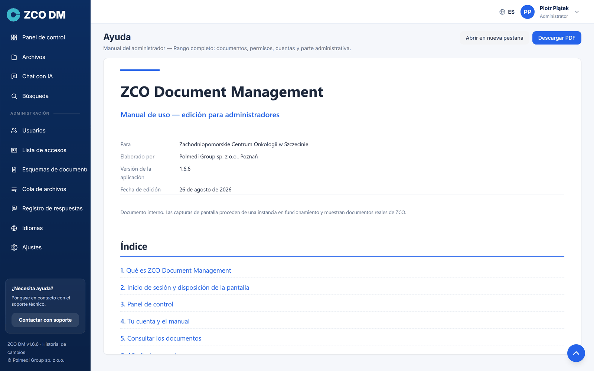
Consultar los documentos
La pantalla Archivos es el explorador de documentos. Arriba figura la ruta de navegación, que empieza en la Carpeta raíz: al hacer clic en cualquiera de sus elementos se vuelve a ese nivel. Más abajo hay dos fichas: Carpetas y Archivos.

Dos vistas
Tanto las carpetas como los archivos pueden verse como lista o como mosaico: el conmutador está en la cabecera de cada ficha y la elección es independiente para carpetas y para archivos. La lista reúne más información de un vistazo; el mosaico resulta más cómodo cuando buscamos un documento «de memoria visual».
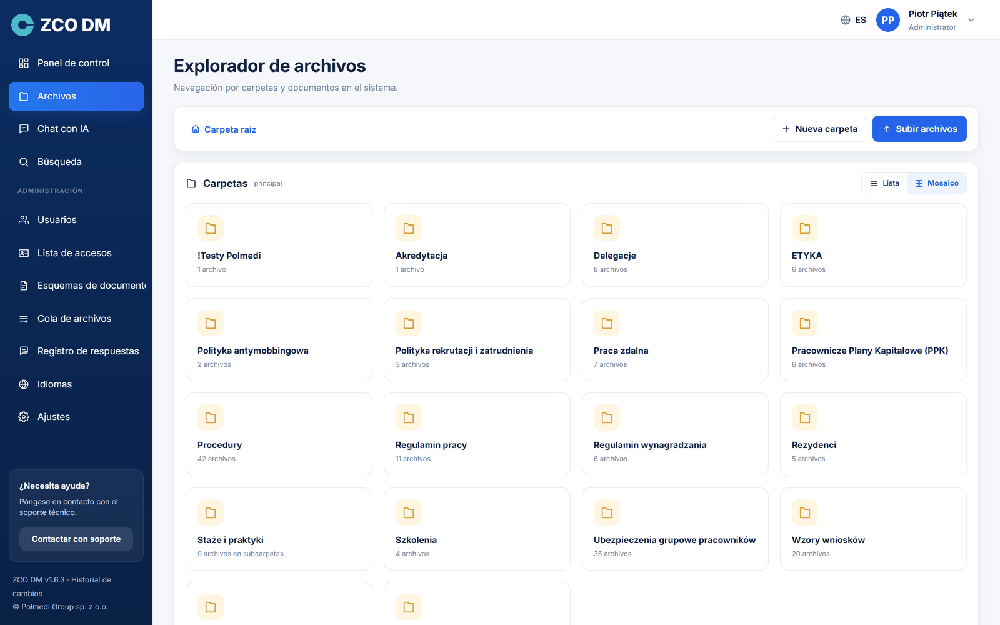
Columnas de la lista
La lista de archivos muestra el tipo de archivo, el nombre, el tamaño, la categoría reconocida por la aplicación y la fecha de adición. La categoría es el tipo de documento —reglamento, procedimiento, solicitud— y suele ser lo que ayuda a dar con el archivo correcto. Los documentos que la aplicación no ha asignado a ninguna categoría llevan en esa columna la palabra no reconocida.
Buscar y paginar
El campo Buscar archivo situado sobre la lista filtra los documentos por nombre dentro de la carpeta actual. Bajo la lista figuran el número de documentos y la elección de cuántas entradas mostrar por página (10, 25, 50 o 100).
Detalles del documento
Al hacer clic en una fila se abre una ventana con los detalles: tipo de archivo, tamaño, estado de procesamiento, fecha de adición, carpeta, cuenta que subió el documento y categoría reconocida. Desde esa ventana el documento se puede descargar, y los archivos PDF también previsualizar en una pestaña nueva.
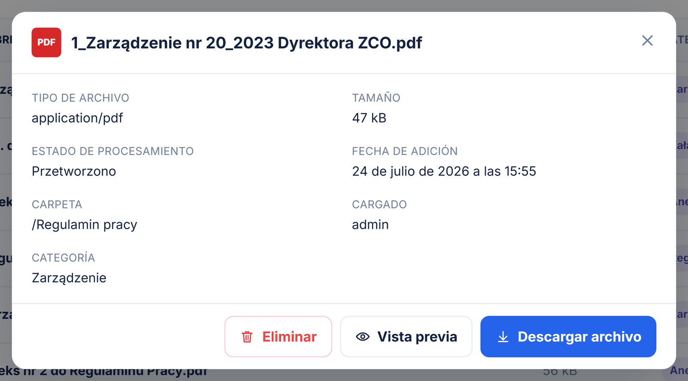
Añadir documentos
Los documentos se añaden con el botón Subir archivos de la esquina superior derecha de la página Archivos. Van a parar a la carpeta que esté abierta en ese momento; por eso primero entramos en la carpeta correcta y solo después subimos. La carpeta de destino aparece siempre escrita en la ventana de envío.
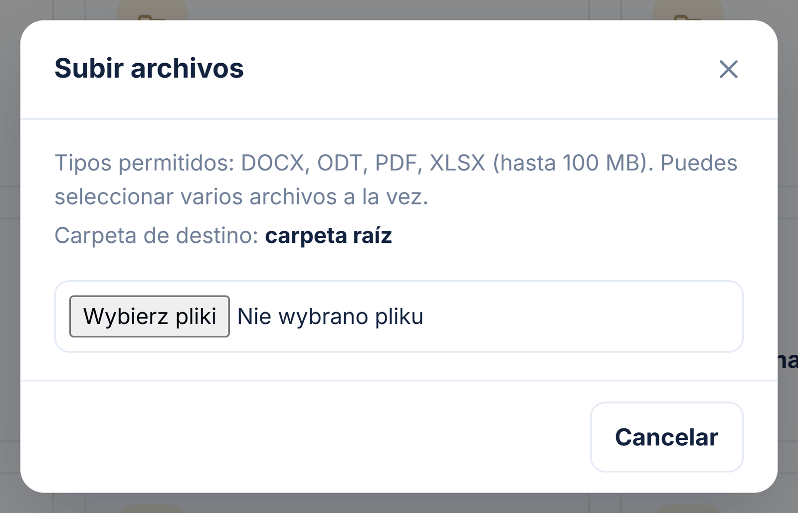
Se pueden seleccionar varios archivos a la vez. La aplicación muestra entonces el progreso por separado para cada uno de ellos y, al final, un resumen: cuántos archivos se subieron y cuántos terminaron con error.
Formatos permitidos
La aplicación acepta archivos PDF, DOCX, ODT y XLSX, cada uno de hasta 100 MB de tamaño. La lista de formatos se ve en la ventana de envío y procede directamente de los ajustes de la aplicación: si el administrador la cambia, la ventana mostrará la lista nueva y el cuadro de selección de archivos del sistema filtrará las demás extensiones.
Poner orden: carpetas, mover, eliminar
Mantener ordenado el conjunto de documentos es tarea del administrador. Todas las operaciones descritas a continuación se realizan en la pantalla Archivos.
Nueva carpeta
El botón Nueva carpeta crea una subcarpeta en el lugar donde nos encontramos. La ventana muestra qué permisos heredará la carpeta nueva de la carpeta superior: es una vista informativa, los permisos se cambian después con el icono del candado.
Cambiar el nombre de una carpeta
El icono del lápiz en el mosaico de una carpeta (visible al pasar por encima) cambia su nombre. El cambio afecta a la ruta de esa carpeta y de todas sus subcarpetas; los archivos y los permisos permanecen asignados sin cambios.
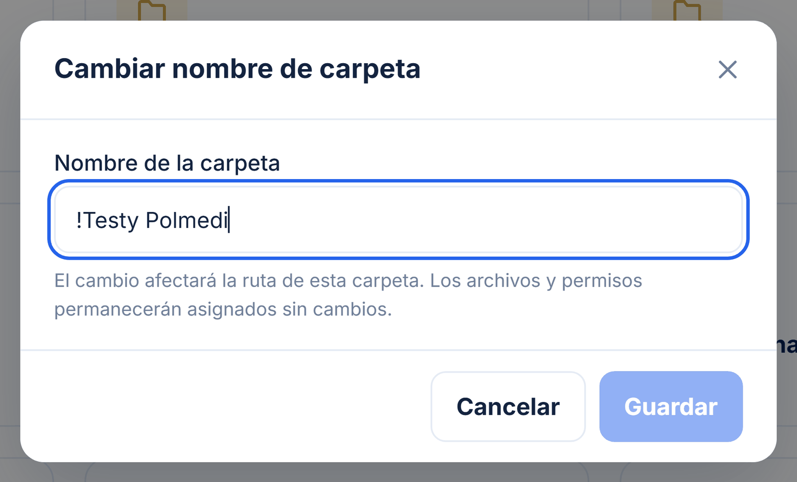
Mover documentos
Un documento suelto se mueve con el icono de carpeta con flecha de su fila. La lista de carpetas de destino está ordenada alfabéticamente y contiene únicamente aquellas en las que tenemos derecho de escritura.
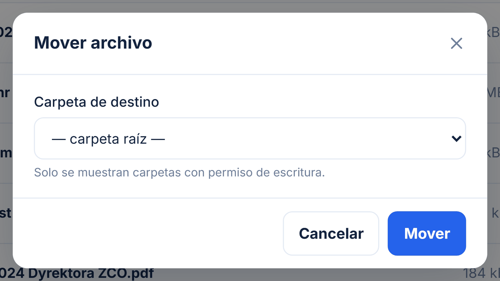
Operaciones sobre varios documentos a la vez
Al marcar documentos con las casillas de la izquierda se descubre el botón Ejecutar acción en los seleccionados con dos posibilidades: Mover a otra carpeta y Asignar nombres según la categoría (descrita en el capítulo sobre el reconocimiento de documentos). La casilla de la cabecera marca los documentos de la página actual, no la lista entera.
Eliminar
El icono de la papelera elimina un documento junto con sus fragmentos en la base de conocimiento: una vez eliminado, deja de aparecer en las respuestas del chat. Eliminar una carpeta traslada sus documentos a la carpeta raíz, de modo que nada se pierde junto con la carpeta.
Permisos y roles
El acceso a los documentos se deriva del rol al que pertenece la cuenta y de los permisos concedidos a ese rol sobre las carpetas. Los permisos no se conceden a personas concretas: gracias a ello, al cambiar de puesto basta con cambiar el rol de la cuenta en lugar de corregir decenas de carpetas.
Dos niveles de acceso
- Lectura: el rol ve los documentos de la carpeta, puede abrirlos y descargarlos, y su contenido participa en las respuestas del chat.
- Escritura: además se pueden subir documentos nuevos, moverlos y eliminarlos.
Herencia
Un permiso concedido sobre una carpeta abarca también sus subcarpetas. En la ventana de permisos, las entradas heredadas se describen como (heredado de la carpeta superior) y no se pueden eliminar allí: se cambian en la carpeta superior. En una subcarpeta el acceso solo se puede ampliar, por ejemplo elevar Lectura a Escritura.
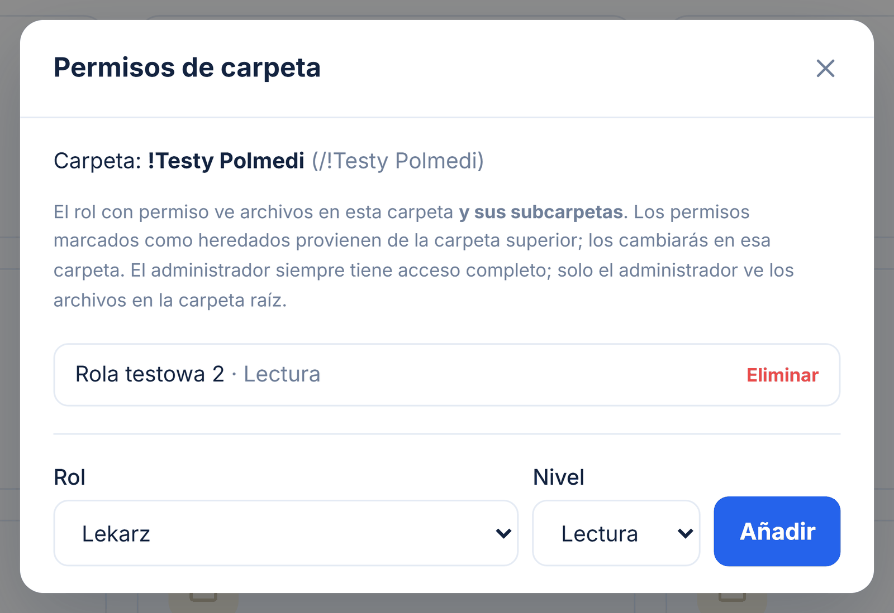
Gestión de roles
Los roles se definen en la pantalla Lista de accesos con el botón Añadir rol. Un rol también se puede renombrar y eliminar. Conviene conocer tres reglas que la aplicación hace cumplir:
- El cambio de nombre solo cambia la etiqueta. El código interno del rol sigue siendo el mismo, de modo que los permisos concedidos antes y las asignaciones de cuentas siguen funcionando sin cambios.
- Los roles del sistema no se pueden eliminar: Administrador e Invitado forman parte del funcionamiento de la aplicación.
- Eliminar un rol al que pertenecen cuentas exige indicar un rol sustituto. La aplicación trasladará a él esas cuentas para que ninguna quede sin asignación.
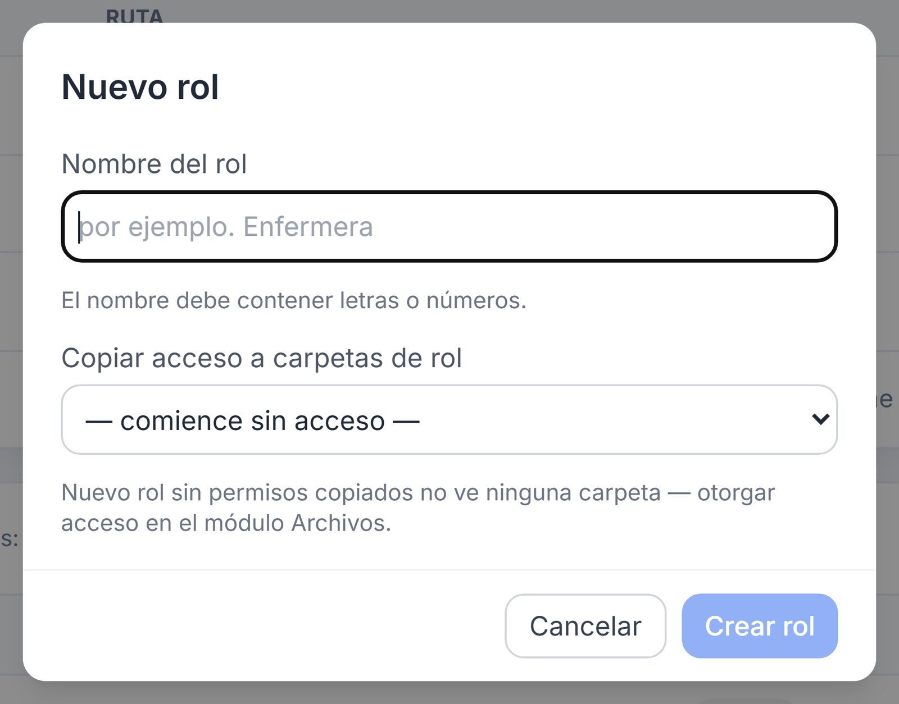
Una vista del conjunto
La pantalla Lista de accesos muestra un resumen de todos los roles y carpetas en un solo lugar, de modo que en ella se ve enseguida quién ve qué. Al hacer clic en una carpeta se llega directamente a ella en el explorador.
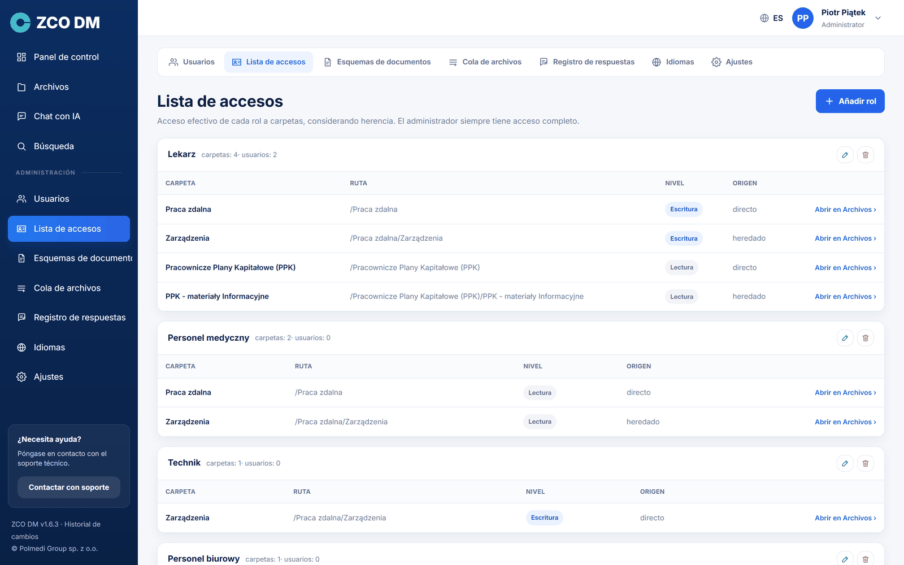
Chat con IA: preguntas sobre el contenido de los documentos
La pantalla Chat con IA es el lugar en el que planteamos preguntas sobre el contenido de los documentos. Se divide en tres partes: la lista de conversaciones anteriores a la izquierda, la ventana de conversación en el centro y un enlace al buscador a la derecha.
La pregunta se escribe en el campo de abajo y se confirma con la tecla Enter; Mayús+Enter pasa a una línea nueva. La respuesta aparece poco a poco, palabra a palabra, y se puede interrumpir con el botón Detener.
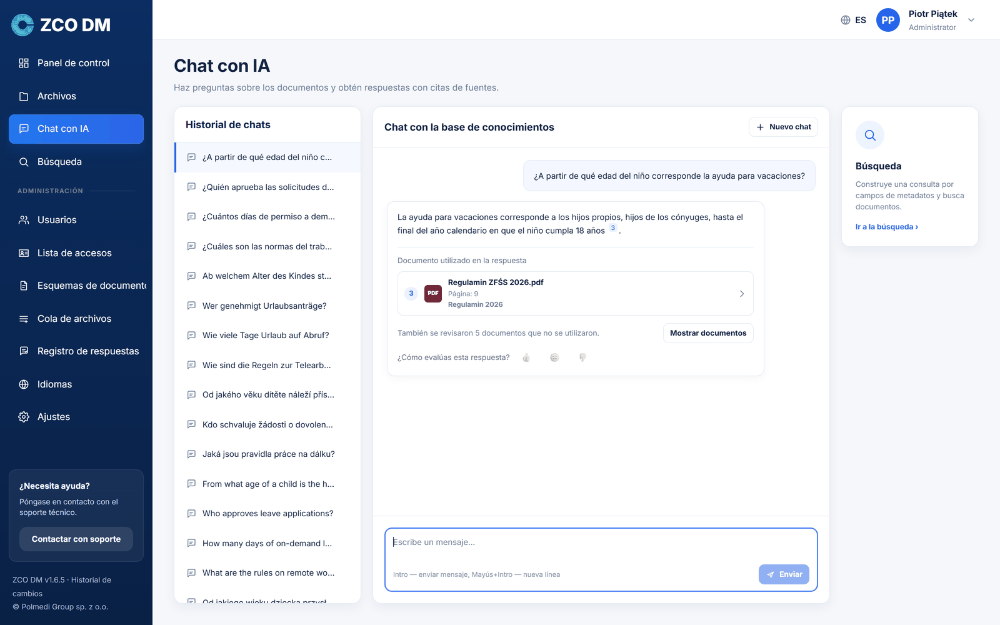
De dónde procede la respuesta
Bajo cada respuesta figura una lista de documentos utilizados en la respuesta. Cada entrada indica el número de referencia, el nombre del archivo, la página y el tipo de documento; al hacer clic se abre el documento de origen. Los números de las etiquetas se corresponden con las referencias del texto de la respuesta, de modo que se ve qué frase procede de dónde.
Debajo suele haber además una indicación del tipo También se revisaron 7 documentos que no se utilizaron, junto con un botón que despliega su lista. Son documentos que la aplicación revisó en busca de una respuesta, pero en los que no encontró nada sobre el tema; conviene echarles un vistazo cuando la respuesta parece incompleta.
Cuando en los documentos no está la respuesta
La aplicación responde únicamente a partir de los documentos subidos. Si no encuentra la información, lo escribe con claridad en lugar de inventarla. La respuesta «no se ha encontrado información sobre este tema en los documentos» es, por tanto, una información sobre el conjunto de documentos, no un fallo.
Preguntas por una lista de documentos
Una pregunta del tipo «muestra todos los reglamentos de 2023» la reconoce la aplicación como una petición de listado, no de una respuesta a partir del contenido. Responde entonces con la frase «Encontré N documentos», la lista de esos documentos y el botón Descargar esta lista en archivo XLSX.
Conversaciones
Cada conversación se guarda en la lista de la izquierda y se puede volver a ella. El botón Nuevo chat empieza una conversación desde cero. Esto importa: dentro de una misma conversación la aplicación tiene en cuenta las preguntas anteriores, así que al cambiar de tema es mejor empezar una nueva.
Bajo la respuesta aparece una petición de valoración. Las valoraciones van a parar a la pantalla Registro de respuestas de la parte administrativa y sirven para mejorar la calidad del funcionamiento; conviene animar a los usuarios a que la utilicen.
↑ ÍndiceBúsqueda por campos descriptivos
La Búsqueda es una pantalla aparte en el menú. Responde a preguntas sobre la estructura del conjunto: «todos los reglamentos de 2023», «solicitudes firmadas por una persona concreta». El chat responde a preguntas sobre el contenido; los dos caminos no se mezclan a propósito.
Pregunta con tus propias palabras
Lo más sencillo es escribir la pregunta en lenguaje corriente en el campo de arriba. El cursor se sitúa en él nada más entrar en la pantalla. La aplicación reconoce en la pregunta el tipo de documento y las condiciones, rellena con ellas el formulario de abajo y muestra los resultados de inmediato. El filtro reconocido se puede corregir después a mano y buscar otra vez.
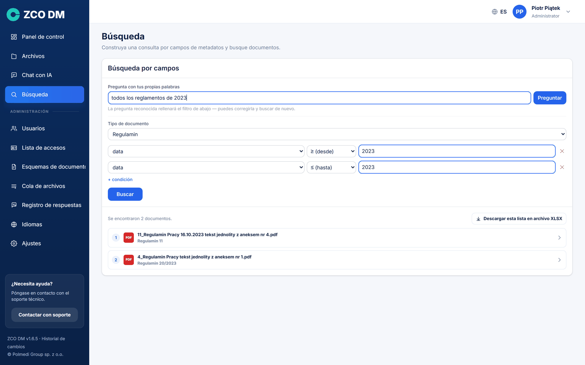
El formulario
El formulario se compone de un tipo de documento y de cualquier número de condiciones. Una condición es un campo descriptivo, un operador (contiene, igual, desde, hasta, después, antes) y un valor. La lista de campos disponibles depende del tipo de documento elegido: procede directamente de los esquemas de documentos.
Resultados
Los resultados tienen el mismo aspecto que la lista de documentos que aparece bajo una respuesta del chat: número, nombre del archivo y tipo de documento. Aquí no hay página: el resultado es un archivo entero, no un fragmento suyo. Al hacer clic se abre el documento. Sobre la lista hay un botón Descargar esta lista en archivo XLSX: la hoja de cálculo contiene el conjunto completo de campos descriptivos, con las columnas en el orden fijado en el esquema del documento.
Administración
La parte administrativa se encuentra en el menú bajo la línea ADMINISTRACIÓN y es visible únicamente para las cuentas de administrador. Las mismas entradas las repite la barra de pestañas de la parte superior de cada una de esas pantallas.
Usuarios
Creación de cuentas, cambio de rol, desactivación y restablecimiento de contraseña. La cuenta inicia sesión con la dirección de correo electrónico; el nombre de visualización sirve solo para mostrarlo en la interfaz y puede repetirse.
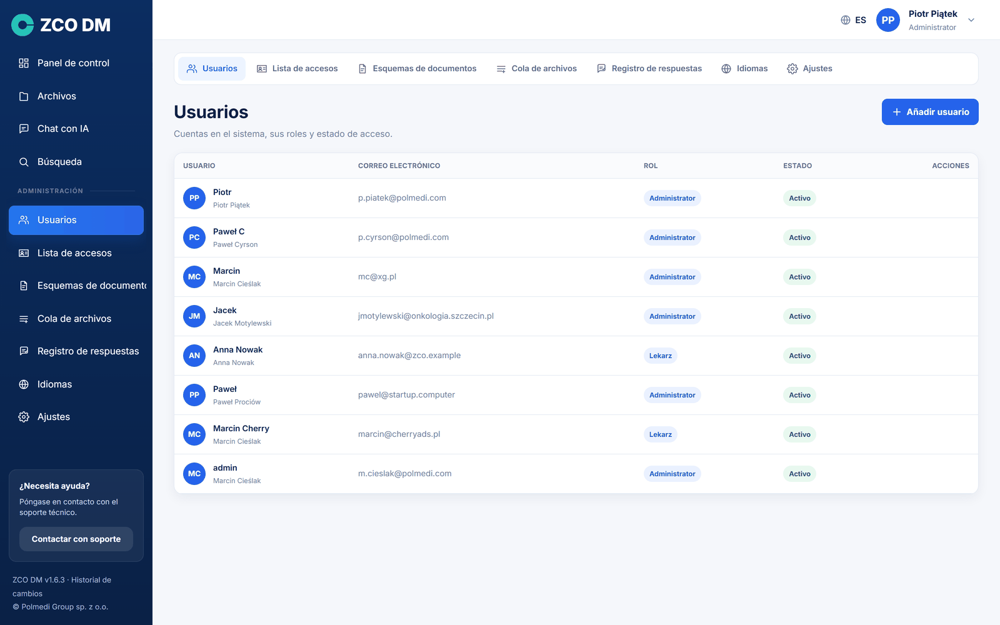
Lista de accesos
Resumen de los permisos de todos los roles y gestión de los roles en sí, descrito en el capítulo sobre permisos.
Esquemas de documentos
Tipos de documentos junto con sus campos descriptivos, criterios de reconocimiento y patrón del nombre de archivo. Es la pantalla que más influye en la calidad del funcionamiento del buscador, descrita en el capítulo sobre el reconocimiento de documentos.
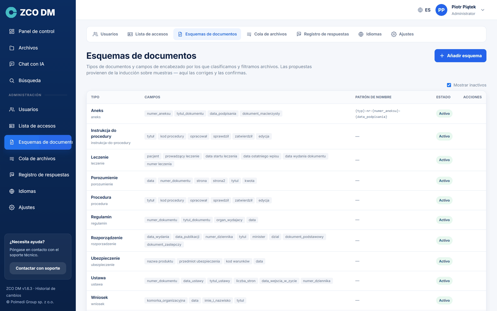
Cola de archivos
Vista del procesamiento: qué espera, qué está en curso, qué ha fallado. Aquí se ven el tipo de documento reconocido y los campos extraídos, de modo que es el primer sitio en el que conviene mirar cuando un documento no aparece en los resultados.
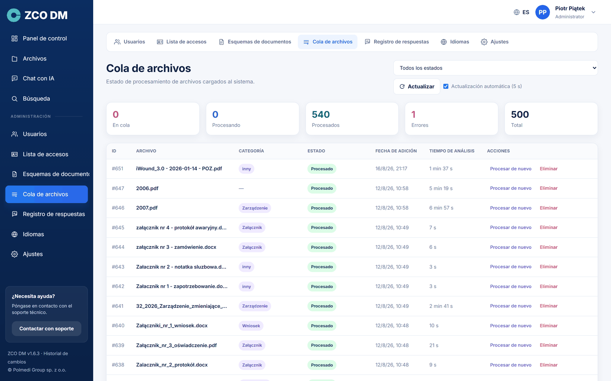
Registro de respuestas
Las valoraciones dadas a las respuestas del chat junto con la pregunta, la respuesta y los documentos indicados. Sirve para detectar preguntas que la aplicación responde mal: cada entrada de ese tipo es una pista sobre qué documento falta o qué esquema necesita corrección.
Ajustes
La pantalla se divide en tres partes.
- Identificación de la aplicación: nombre de la instancia, color del rótulo e icono. El icono debe ser un archivo PNG o SVG cuadrado (mínimo recomendado 128×128 px); aparece en lo alto del menú y en la pantalla de inicio de sesión. La vista previa que hay al lado muestra exactamente lo que verá el usuario.
- Integraciones y sesión: las direcciones de los webhooks de procesamiento y de chat, la lista de extensiones de archivo permitidas y el tiempo hasta el cierre automático de sesión.
- Correo saliente: los datos del servidor SMTP y la dirección de soporte. Sin ellos el formulario «Contactar» responderá con claridad que el envío no está configurado.
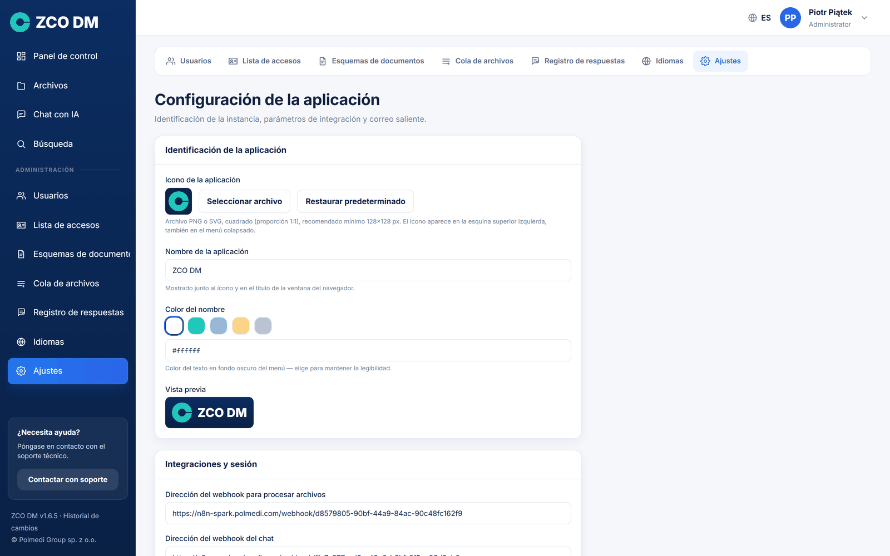
Historial de cambios
El número de versión del pie del menú lateral lleva a la lista de cambios de las sucesivas ediciones de la aplicación. Esa página está disponible para todos los usuarios con sesión iniciada.
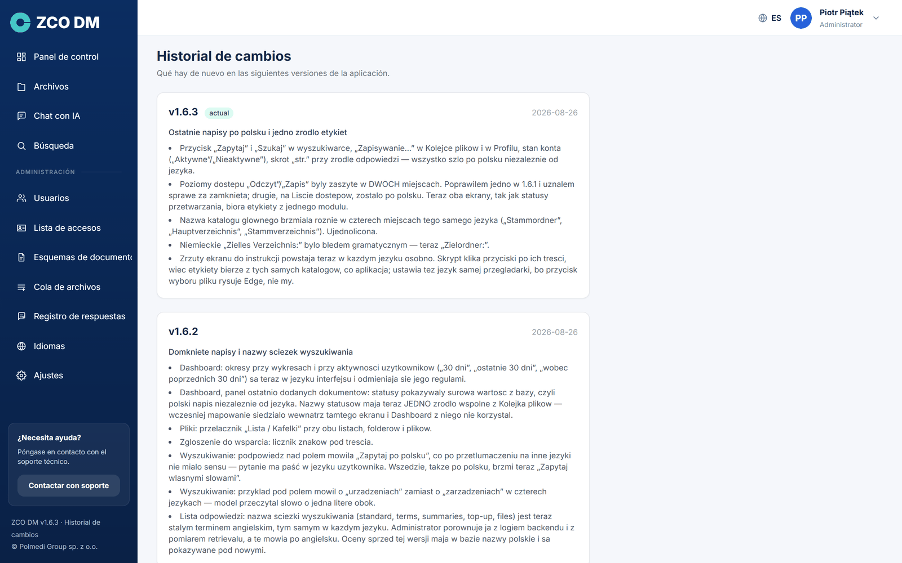
Cómo reconoce la aplicación los documentos
Después de subir un documento la aplicación intenta determinar qué es y extraer de él los campos descriptivos. Lo hace basándose en los esquemas de documentos: definiciones de tipos de documentos que el administrador fija en una pantalla aparte.
De qué se compone un esquema
- Nombre e identificador del tipo de documento, por ejemplo «Reglamento».
- Criterios de clasificación: indicaciones en lenguaje corriente sobre cómo reconocer ese tipo de documento.
- Campos de encabezado: qué extraer del contenido: número, fecha, título, persona firmante. El orden de los campos determina el orden de las columnas al exportar a una hoja de cálculo.
- Patrón del nombre de archivo: opcional, descrito más abajo.
Tipos de campo
Cada campo tiene un tipo: Texto, Fecha, Número, Importe o Lista de valores. El tipo no es un adorno: decide qué se puede hacer con el campo. Las fechas permiten filtrar por intervalos, y los importes van a la hoja de cálculo como números con decimales, de modo que la columna suma (también cuando en el documento figuraba como «1 234,56 zł»).
Nombres de archivo a partir de los campos reconocidos
Cada tipo de documento puede tener un patrón del nombre de archivo, por ejemplo {tipo}-n-{numero_documento}-{fecha}. La aplicación propone entonces nombres acordes con el contenido del documento en lugar de «escaneo_0001.pdf». Un patrón vacío significa que para esa categoría no proponemos nombres.
Los nombres se asignan por lotes: en la pantalla Archivos marcamos los documentos y elegimos Ejecutar acción en los seleccionados → Asignar nombres según la categoría. La ventana muestra primero un resumen de nombre antiguo → nuevo; cada entrada se puede corregir a mano o desmarcar. Nada ocurre sin esa vista previa.
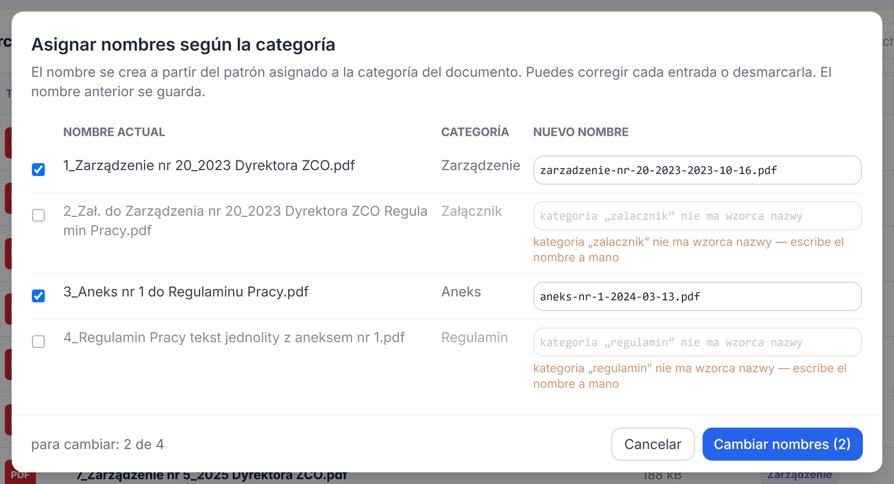
El nombre anterior se guarda y es visible en los detalles del documento, de modo que el cambio se puede rastrear y el documento sigue siendo reconocible para quien lo recuerda con el nombre antiguo.
Cuando el reconocimiento falla
Un documento que la aplicación no ha asignado a ningún tipo tiene la categoría no reconocida. Sigue siendo consultable a través del chat, pero no se encontrará en el buscador que filtra por campos. Las causas más frecuentes son un escaneo de mala calidad o la ausencia de un esquema que describa ese tipo de documento.
Solicitud al soporte técnico
El recuadro ¿Necesita ayuda? del pie del menú lateral lleva al formulario de solicitud al soporte técnico. Basta con describir el asunto y enviarlo: el remitente y la instancia se adjuntan automáticamente, y la respuesta llegará a la dirección de correo electrónico asignada a la cuenta.
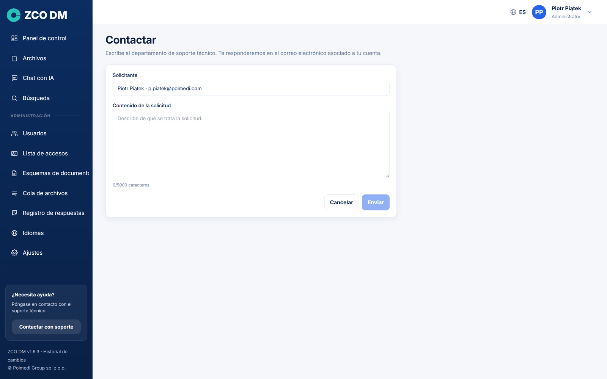
La solicitud va por correo, no a través del mecanismo de procesamiento de documentos. Es deliberado: una avería del procesamiento no puede cortar la vía para comunicar un problema, porque es justo entonces cuando las comunicaciones son más necesarias.
Buenas prácticas
- Dar a los documentos nombres que digan qué son: facilita tanto el reconocimiento del tipo como la búsqueda posterior.
- Subir los documentos a una carpeta temática, no a la carpeta raíz.
- Comprobar el estado después de subirlos: solo Procesado significa que el documento responde a preguntas.
- Al cambiar de tema, empezar un chat nuevo para que las preguntas anteriores no influyan en la respuesta.
- En asuntos formales, abrir el documento de origen indicado bajo la respuesta.
- Conceder permisos a los roles en la carpeta más alta posible: las subcarpetas los heredan automáticamente.
- Después de un lote grande de documentos, repasar la Cola de archivos y corregir los tipos mal reconocidos.
- Desactivar en lugar de eliminar las cuentas de las personas que se han ido: así se conserva el historial de operaciones.
Limitaciones y planes de desarrollo
La aplicación se desarrolla por etapas. Las limitaciones siguientes son conocidas y están previstas para su eliminación; conviene conocerlas para no tomarlas por fallos.
- La aplicación responde únicamente a partir de los documentos subidos a la base: no conoce ni normativa ni conocimientos ajenos a ellos.
- La respuesta del chat es un resumen de fragmentos de documentos. En asuntos formales rige el documento de origen indicado bajo la respuesta.
- El reconocimiento del tipo de documento y de los campos descriptivos funciona bien con documentos de estructura habitual; los documentos atípicos pueden requerir una corrección manual del tipo.
- La previsualización del documento abre el archivo PDF en una pestaña nueva del navegador. Está previsto un visor integrado en la aplicación que abra el documento directamente en la página indicada.
- Los vínculos entre documentos (por ejemplo un reglamento y sus anexos) todavía no se presentan en la interfaz.
- El buscador por campos descriptivos no busca en el contenido de los documentos: para eso está el chat.
Cada cambio se describe en el Historial de cambios accesible desde la aplicación, bajo el número de versión del pie del menú.
↑ ÍndicePreguntas frecuentes
A continuación, las situaciones que más se comunican en el primer contacto con la aplicación.
| Situación | Qué hacer |
|---|---|
| He subido un documento, pero el chat no lo conoce. | Comprobar el estado en la lista de archivos. Mientras no ponga Procesado, el documento no participa en la búsqueda. Con documentos largos el procesamiento dura unos minutos. |
| El chat responde que no ha encontrado información. | Lo más frecuente es que la pregunta se refiera a un documento que no está en la base, o que el documento aún no esté procesado. Conviene también plantear la pregunta de otro modo, con una frase completa. |
| No veo una carpeta de la que habla un compañero. | Las carpetas se comparten con roles. Si falta el acceso, hay que pedir al administrador que conceda el permiso sobre esa carpeta. |
| La aplicación me ha cerrado la sesión sola. | Tras el periodo de inactividad fijado por el administrador la sesión caduca. Basta con iniciar sesión de nuevo. |
| No puedo subir un archivo: el cuadro de selección no lo muestra. | La aplicación acepta los formatos PDF, DOCX, ODT y XLSX. Los archivos en otros formatos hay que guardarlos primero en uno de ellos. |
| No puedo iniciar sesión con el nombre de usuario. | Para iniciar sesión sirve únicamente la dirección de correo electrónico asignada a la cuenta. El nombre de usuario es solo un nombre de visualización. |
| He olvidado la contraseña. | El administrador establece una contraseña nueva en el módulo Usuarios. Tras iniciar sesión conviene cambiarla por una propia en la página Perfil. |
| ¿Dónde encuentro este manual en la aplicación? | Bajo el círculo con las iniciales de la esquina superior derecha, la entrada Ayuda. Desde allí también se puede descargar como PDF. |
| Un documento se ha reconocido como un tipo equivocado. | En la Cola de archivos se puede indicar a mano el tipo correcto; la aplicación extraerá los campos de nuevo al instante. |
| Un empleado nuevo no ve ningún documento. | La cuenta tiene un rol, pero el rol aún no tiene permisos sobre carpetas. Los permisos se conceden en la vista Archivos, con el icono de la llave junto a la carpeta. |
| Quiero añadir un tipo de documento nuevo con campos propios. | Para eso está la página Esquemas de documentos en Administración. |
Glosario
| Término | Significado |
|---|---|
| Chat con IA | La pantalla en la que planteamos preguntas sobre el contenido de los documentos. |
| Búsqueda | La pantalla en la que filtramos documentos por campos descriptivos. |
| Chat | Una conversación con la aplicación mantenida en lenguaje corriente. |
| Fragmento (chunk) | Un trozo de documento: la unidad en la que la aplicación divide el contenido para poder señalar con precisión el origen de una respuesta. |
| Análisis (parsing) | La lectura del contenido de un documento y su preparación para la búsqueda. |
| Campo descriptivo | Información que describe un documento: número, fecha, persona que aprueba. |
| Tipo de documento | Categoría reconocida automáticamente: reglamento, procedimiento, solicitud y otras. |
| Rol | Grupo de permisos asignado a una cuenta: las carpetas se comparten con roles, no con personas. |
| Fuente | El documento y la página de los que procede un fragmento dado de la respuesta. |